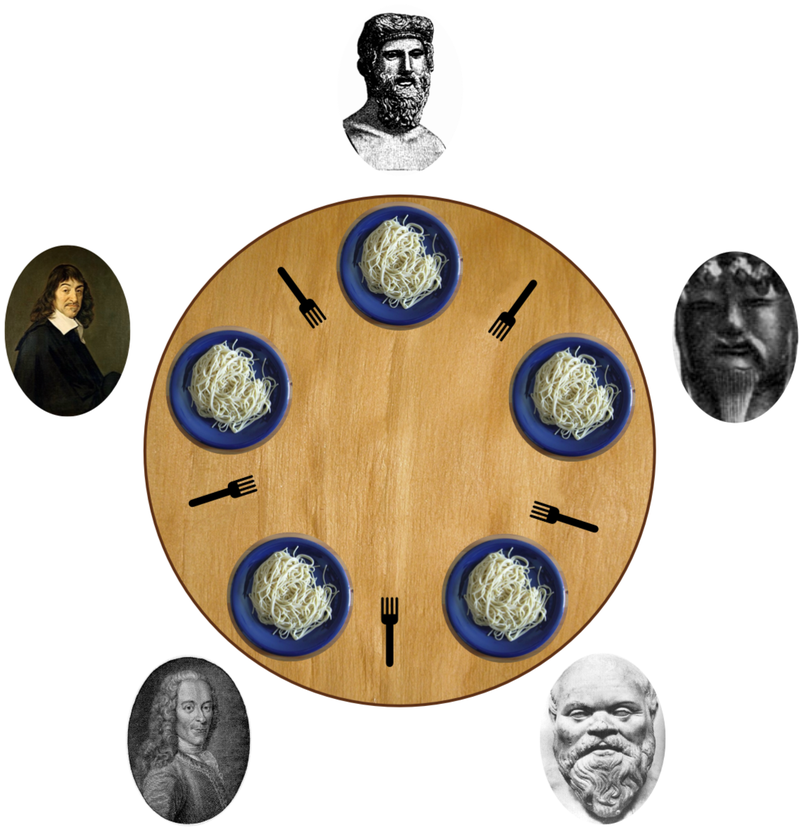

1226. 哲学家进餐
信号量只放 4 人上桌抢叉：5 人全持左叉等右叉才成死环，缺一人环就闭不上。
思路
- 死锁根源：5 人同时各拿左叉、齐等右叉，等待环 0→1→2→3→4→0 闭合。
- 限流到 4：等待环要绕满 5 个哲学家才能闭合，缺一人则链条必有一环落空，总有人拿齐两叉吃完、释放资源。
- 流程：
seats.acquire()拿名额 → 锁左叉、锁右叉 → 依次执行拿叉/吃/放叉回调 → 放叉 →seats.release()。 - 也可以用「奇数先拿左、偶数先拿右」打破对称，或一次
tryLock两把叉失败就全放，本题限流最简洁。
图解
最优解
1import java.util.concurrent.*;2import java.util.concurrent.locks.ReentrantLock;3 4class DiningPhilosophers {5 // 名额信号量：最多放行 4 人同时抢叉子。5 人全上桌才可能人人持左叉等右叉，绕成死环6 private final Semaphore seats = new Semaphore(4);7 // 叉子 i 在哲学家 i 左手边；i 的右叉 (i+1)%5 与邻居共用8 private final ReentrantLock[] fork = new ReentrantLock[5];9 10 public DiningPhilosophers() {11 for (int i = 0; i < 5; i++) fork[i] = new ReentrantLock();12 }13 14 public void wantsToEat(int philosopher,15 Runnable pickLeftFork,16 Runnable pickRightFork,17 Runnable eat,18 Runnable putLeftFork,19 Runnable putRightFork) throws InterruptedException {20 int left = philosopher, right = (philosopher + 1) % 5;21 seats.acquire(); // 先抢名额再碰叉子：永远有人能拿齐两根22 fork[left].lock();23 fork[right].lock();24 pickLeftFork.run();25 pickRightFork.run();26 eat.run();27 putLeftFork.run();28 putRightFork.run();29 fork[right].unlock(); // 吃完先放叉再放名额，等的人才能补位30 fork[left].unlock();31 seats.release();32 }33}题目
5 个沉默寡言的哲学家围坐在圆桌前，每人面前一盘意面。叉子放在哲学家之间的桌面上。（5 个哲学家，5 根叉子）
所有的哲学家都只会在思考和进餐两种行为间交替。哲学家只有同时拿到左边和右边的叉子才能吃到面，而同一根叉子在同一时间只能被一个哲学家使用。每个哲学家吃完面后都需要把叉子放回桌面以供其他哲学家吃面。只要条件允许，哲学家可以拿起左边或者右边的叉子，但在没有同时拿到左右叉子时不能进食。
假设面的数量没有限制，哲学家也能随便吃，不需要考虑吃不吃得下。
设计一个进餐规则（并行算法）使得每个哲学家都不会挨饿；也就是说，在没有人知道别人什么时候想吃东西或思考的情况下，每个哲学家都可以在吃饭和思考之间一直交替下去。

问题描述和图片来自维基百科 wikipedia.org
哲学家从 0 到 4 按 顺时针 编号。请实现函数 void wantsToEat(philosopher, pickLeftFork, pickRightFork, eat, putLeftFork, putRightFork)：
philosopher哲学家的编号。pickLeftFork和pickRightFork表示拿起左边或右边的叉子。eat表示吃面。putLeftFork和putRightFork表示放下左边或右边的叉子。- 由于哲学家不是在吃面就是在想着啥时候吃面，所以思考这个方法没有对应的回调。
给你 5 个线程，每个都代表一个哲学家，请你使用类的同一个对象来模拟这个过程。在最后一次调用结束之前，可能会为同一个哲学家多次调用该函数。
示例：
输入：n = 1
输出：[[3,2,1],[3,1,1],[3,0,3],[3,1,2],[3,2,2],[4,2,1],[4,1,1],[2,2,1],[2,1,1],[1,2,1],[2,0,3],[2,1,2],[2,2,2],[4,0,3],[4,1,2],[4,2,2],[1,1,1],[1,0,3],[1,1,2],[1,2,2],[0,1,1],[0,2,1],[0,0,3],[0,1,2],[0,2,2]]
解释:
n 表示每个哲学家需要进餐的次数。
输出数组描述了叉子的控制和进餐的调用，它的格式如下：
output[i] = [a, b, c] (3个整数)
- a 哲学家编号。
- b 指定叉子：{1 : 左边, 2 : 右边}.
- c 指定行为：{1 : 拿起, 2 : 放下, 3 : 吃面}。
如 [4,2,1] 表示 4 号哲学家拿起了右边的叉子。
提示：
1 <= n <= 60
题面取自力扣当前版本。
数据快照 2026-11-04。题面版权归力扣所有，本站点仅供本人学习使用，请勿对外发布。